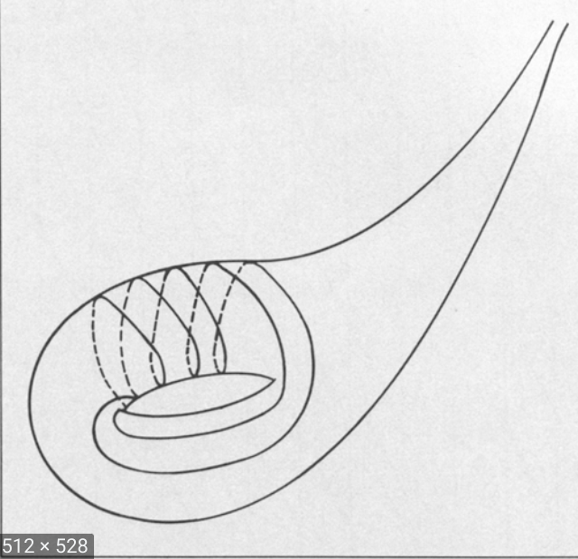
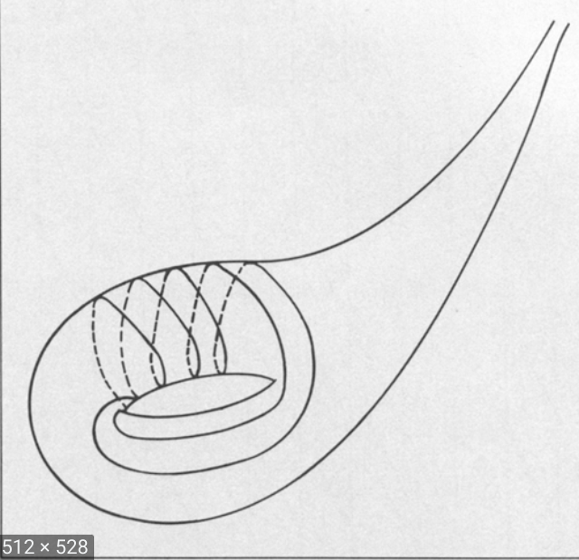

Part 2
greg mc
May 2021
Contents
- Character variety
- Norms and counting
- Proof of Aigner
- Proof by snakes
- More lengths
Character variety
H. Cohn, Approach to Markov’s Minimal Forms Through Modular Functions (1955)
- modular torus = quotient of upper half plane \(\mathbb{H}\) by \(\Gamma\) = commutator subgroup of \(PSL(2,\mathbb{Z})\), acting by Mobius transformations
- relates Markoff numbers to lengths of simple closed geodesics
Back to the Torus
- \(\mathbb{Z}^2\) acting on \(\mathbb{R}^2\) by translation
- quotient space (orbit space) is a euclidean torus
- primitive elements \((p,q)\in \mathbb{Z}^2\)
- \(\rightarrow\) closed curve on torus = \((p,q)\) curve
- (usual) length \(=\|(p,q)\| = \sqrt{p^2 + q^2}\)
Usual Torus

Torus
- \(\mathbb{Z}^2\) acts by translation in lots of different ways
- translation lengths of \((1,0),(0,1),(1,-1)\) determine (up to conjugation)
- the representation \(\mathbb{Z}^2 \rightarrow \text{isom}(\mathbb{R}^2)\)
- length of \((p,q)\) curve given by quadratic form
representation \(\mathbb{Z}^2 \rightarrow \text{isom}(\mathbb{R}^2)\)

representation \(\mathbb{Z}^2 \rightarrow \text{isom}(\mathbb{R}^2)\)
.png)
Threes, triangles, tori
- 3 side lengths determine a triangle
- need 3 numbers to build a euclidean torus
- what about the 3 Markoff numbers ?
- can build a hyperbolic punctured torus
- no simple formula for length of \((p,q)\) curve
- modular torus = quotient of upper half plane \(\mathbb{H}\) by \(\Gamma\) = commutator subgroup of \(\text{PSL}(2, \mathbb{Z})\), acting by Mobius transformations
- hyperbolic torus = quotient of upper half plane \(\mathbb{H}\) by \(\Gamma = \rho(\mathbb{Z}*\mathbb{Z})\),
- \(\rho:\mathbb{Z}*\mathbb{Z}\rightarrow\text{PSL}(2, \mathbb{R})\) discrete faithful
Flat torus
Punctured torus

Geometry of the Markoff numbers
 

\(\rho:\mathbb{Z}*\mathbb{Z}\rightarrow\text{PSL}(2, \mathbb{R})\)
- lifts to \(\hat{\rho}:\mathbb{Z}*\mathbb{Z}\rightarrow\text{SL}(2, \mathbb{R})\)
- character map \(\chi : \rho \mapsto ( tr \hat{\rho}(a), tr \hat{\rho}(b), tr \hat{\rho}(ab) )\)
- \(a,b\) generators of the free group = fundamental group of the torus.
Traces behave "like squares of translation lengths"
- parallogram law
- \(b\in SL(2,\mathbb{C}),\,b^2 - (tr b)b + I_2 = 0\)
- (Cayley-Hamilton) \(\Rightarrow\)
- \(tr ab + tr ab^{-1} = (tr a) (tr b)\)
Markoff cubic from the puncture
Loop round the puncture \(aba^{-1}b^{-1}\)
- isn't trivial but it's special (parabolic)
- corresponding matrix something like
- \(\begin{pmatrix} \pm 1 & 6 \\ 0 & \pm 1 \end{pmatrix}\)
puncture condition
\(tr \hat{\rho} (aba^{-1}b^{-1}) = -2\)
- \((x,y,z) = ( tr \hat{\rho}(a), tr \hat{\rho}(b), tr \hat{\rho}(ab) )\)
- \(x^2 + y^2 + z^2 - x y z = 2 + tr \hat{\rho} (aba^{-1}b^{-1})=0.\)
- = Markoff cubic up to a change of variable
"inverse" character map
Section: character variety to representation variety
\(\begin{pmatrix} x & -1 \\ 1 & 0 \end{pmatrix}\) \(\begin{pmatrix} 0 & \eta \\ -\eta^{-1} & y \end{pmatrix}\)
\(z = \text{trace of product} = \eta + \eta^{-1}\)
Cohn shows that the permutations and the Vieta flips used to construct Markov's binary tree are induced by automorphisms of the fundamental group of the torus.
Exo
- Nielsen move \((a,b,ab) \mapsto (a, b^{-1}, ab^{-1})\)
- \(tr ab + tr ab^{-1} = (tr a) (tr b)\)
Counting problem
\(N(t) =\) number of Markoff numbers \(\leq t\)
- \(N(t) = C (\log(3t))^2 + O(\log t)\)
- Zagier (1982) On the Number of Markov Numbers Below a Given Bound.
- Greg McShane, Igor Rivin A norm on homology of surfaces and counting simple geodesics
Counting closed simple geodesics
- character map \(\chi : \rho \mapsto ( tr \hat{\rho}(a), tr \hat{\rho}(b), tr \hat{\rho}(ab) )\)
- \(a,b\) generators fundamental group of the torus.
- \(a\) generator iff \(\exists\) essential simple closed curves representing its conjugacy class
Simple representatives

Simple representatives in homology
\(\phi : \mathbb{Z}*\mathbb{Z} \rightarrow \mathbb{Z}^2 \simeq H^1(T,\mathbb{Z})\) abelianizing homomorphism.
- generators \(\in \mathbb{Z}*\mathbb{Z}\) \(\mapsto\) primitive \(\in \mathbb{Z}^2\).
- \((p,q) \in \mathbb{Z}^2\) primitive \(\Leftrightarrow p,q\) coprime.
La norme
Let \(c\) be an essential closed curve \(\ell_c\) its length.
\(\gamma \in H^1(T,\mathbb{Z}), \, \| \gamma \| := \inf_{ c \in \gamma} \ell_c/2\)
- convexity/triangle inequality
- any pair of curves in linearly independent homology classes intersect
- a curve with self intersections is never a minimizer

more formally from our paper 

Unit ball

Corollary
The length function does not coincide with any reasonable function
- not differentiable at rational slopes
- is well approximated by piecewise linear
Unit ball and counting
- \(\sharp \{ \gamma,\, \| \gamma \| \leq t \} \sim \text{area unit ball}\times t^2\)
- \(\sharp \{ \gamma \text{ primitive},\, \| \gamma \| \leq t \} \sim \frac{6}{\pi^2}\text{area unit ball}\times t^2\)
- the area of the unit ball depends on the hyperbolic structure
- with Rivin we studied it, but now it's called the Mirzakhani function :(
- \(\frac{6}{\pi^2}\) = proba 2 random integers coprime
Why log ?
\(N(t) = C (\log 3 ))^2 + O(\log t)\)
- \(m_{p/q} = \frac13 tr \hat{\rho}( \gamma_{p/q})\)
- \(= \frac23 \cosh\left(\frac{\ell_{\gamma_p}}{2} \right)\)
- \(= \frac23 \cosh(\| (q,p) \|_s)\)
Aigner's conjectures

Aigner's conjectures
Let \(p, q\) be real non negative numbers and \(i > 0\) then
- \(\|(q,p) \|_s < \|(q + i,p) \|_s\)
- \(\|(q,p) \|_s < \|(q ,p +i ) \|_s\)
- If in addition \(p < q\) then \(\|(q ,p ) \|_s < \|(q + i ,p -i ) \|_s\)
Aigners conjectures proof


Pair of pants
- coprime \((p,q) \mapsto w_{p,q} \in \langle a,b \rangle\)
- extend length from \(\mathbb{Z}^2\) to \(\mathbb{R}^2\)
- technically, can be done in general using immersed train tracks
Goldman integer pts, orbifolds
\(x^2 + y^2 + z^2 - x y z = 20.\)
- different \(GL(2,\mathbb{Z})\) orbts
- (2,2,-2) three punctured sphere
- (0,3,1) orbifold, disc with 2 cone points
- (0, 4,2) orbifold, punctured disc one cone point
Three punctured sphere

Pair of pants
\(x^2 + y^2 + z^2 - x y z \geq 20.\)

(0,4,2) orbifold

(0,3,1) orbifold